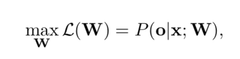
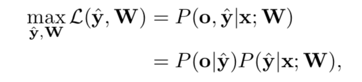
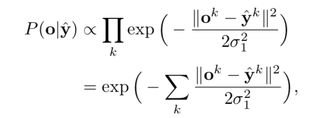
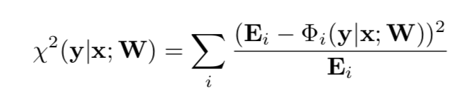
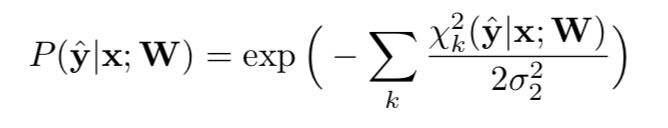
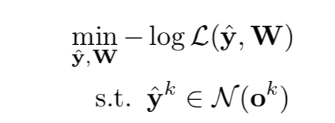
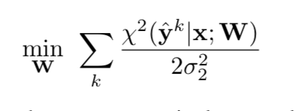

URL:https://arxiv.org/abs/1903.10661
CVPR2019最新挂出来的一篇关于人脸landmark的论文，论文的出发点是觉得目前landmark定位精度受限于部分标注点”语意”模糊有关,比如说脸部轮廓点或者眼部轮廓点不像眼球、鼻尖这些点有明确的语意定义，因此标注引入的误差就相对影响比较大。所以作者从这方面入手在模型每次迭代的时候去寻找这样一个“真正”的gt来监督网络的训练，此外为了来修正一些偏移比较厉害的点，作者又引入了一个子网络来refine整体的landmark。这篇论文整体个人感觉很有意义。
首先作者是利用4个级联的Hourglass结构网络来进行landmark点定位的，下图是作者可视化语意明确和语意不明确点在输出heatmap上的结果，在2D空间可以发现，语意比较明确的点比如眼球中心点它的分布更加接近高斯分布，在3D空间这些点的分布更加的锐利，而语意不明确的点比如轮廓点在3D空间就会形如一个“flat hat”：
同时当网络已经差不多收敛的时候如果继续训练也会发现那些语意不明确的点依然在gt附近来回抖动，这也一定程度上验证了语意不明确导致标注带来的noise。
从网络输出的heatmap上出landamrk点可以将landmark点理解为一种数据分布，w为网络权重、x为输入图片、o为landmark点：

那么既然gt也不是那么的准确，作者不妨就假设目前存在这样一个真正的gt，不会引入任何的语意不确定性，那么上述的公式可以表示为，y为定义的真正的gt, 那么o就可以理解为是y的一个观测值：

为了缩小后续的搜索空间作者做了一个合理的假定：yk存在于ok的附近，所以可以用高斯相似度来衡量这种先验概率：

而至于公式的后半段似然概率作者认为对于模型输出的heatmap，如果位置(x, y)周围的region越符合高斯分布，那么点(x, y )就更接近y这样的真正的gt, 所以作者就利用两个分布（预测分布，实际分布(y的分布)）之间的相似度来度量这个似然概率，Φ为抠patch的操作，E为真正gt的分布：


那么通过简单的转化就可以把前面的优化目标转换为，N(ok)可以理解为以点ok为中心的一小部分区域，其实也就是y的搜索空间：

那么在实际做的时候，作者将整个方法的优化分成两部分来进行，第一步是固定模型的参数W，去搜索最好的y，因为一旦w固定除了yk其他都是已知的，所以直接去搜索yk,搜索空间实际应该是ok为中心的17x17大小的区域，那么第一个iteration，标注结果就是gt，在二个iteration，前一个iteration搜索得到的y就是gt，依次类推。第二步是固定y去训练模型的参数W，然后这一步就是具体的模型训练了，训练目标为：

因为从模型的输出直接出landmark点没有完全的考虑脸的整个形态，更多的是考虑了单个点的相关信息，所以作者最后加了一个GHCU的模块来refine landmark点：

300-W上的实验结果：
AFLW的实验结果：
感觉作者的想法还是很make sense的，目前我们正在用的landmark标注数据也存在这样的语意模糊导致引入标注误差的问题，但是这种标注误差带来的影响还是和实际的任务比较相关，从论文给出的例子来看，预测的landmark点通常在gt附近有一定的抖动，如果这种抖动是贴合轮廓这个影响就相对比较小